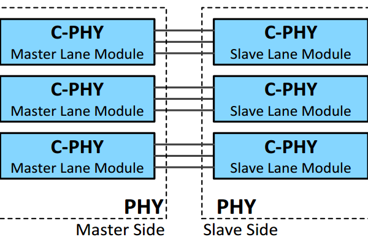
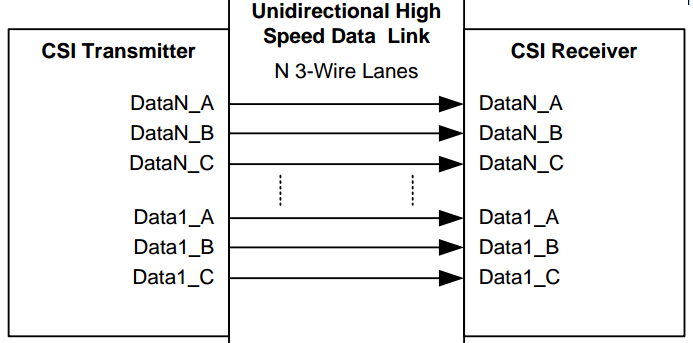
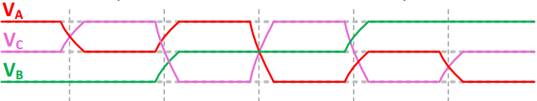
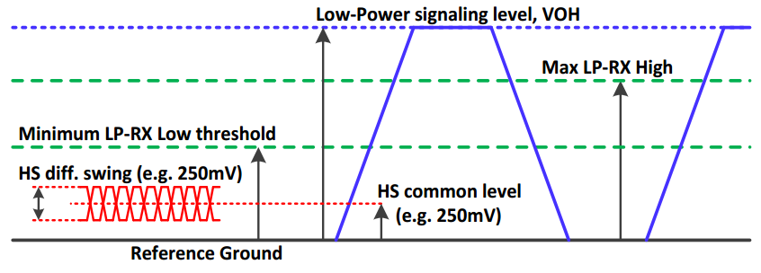
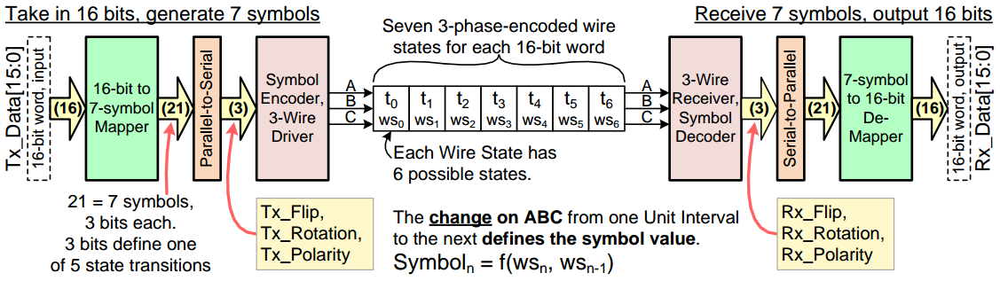
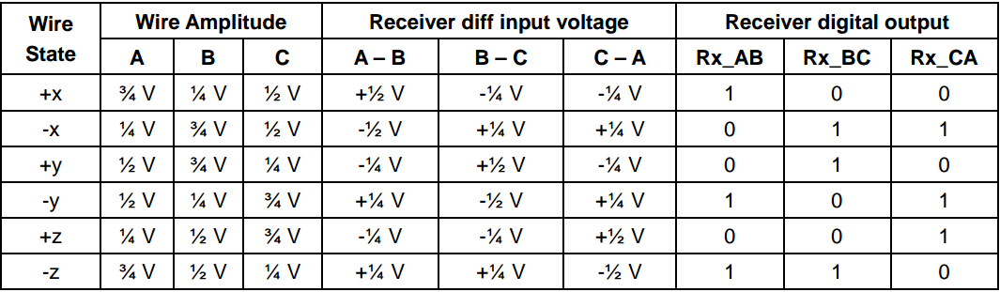
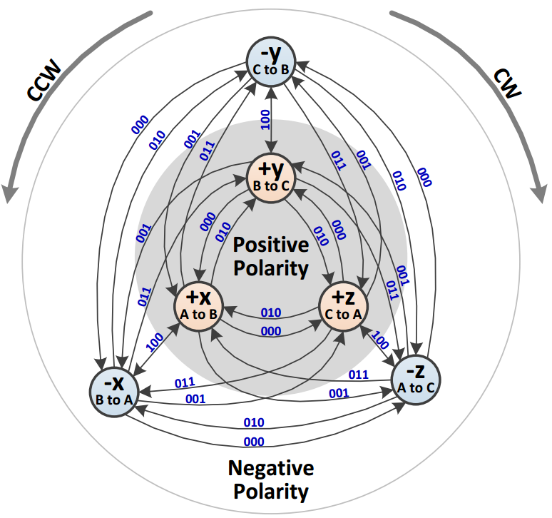
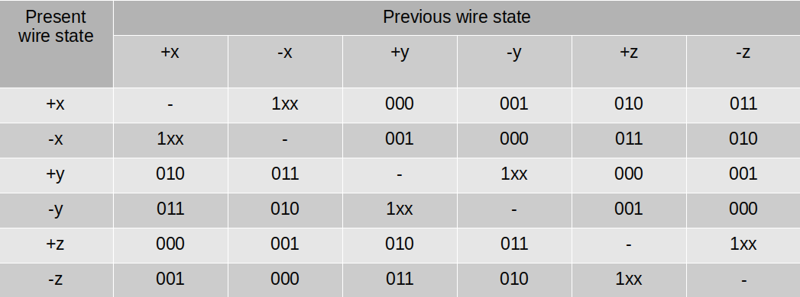
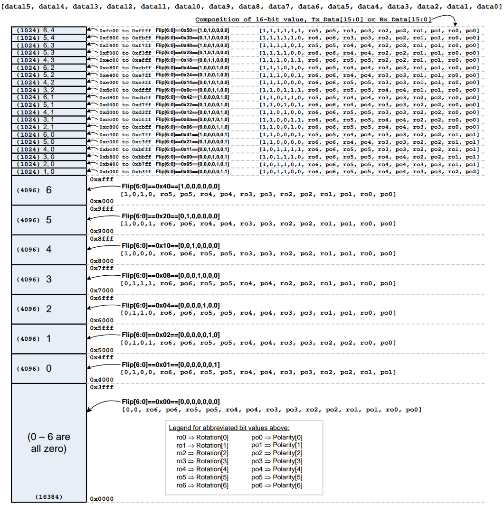

C-PHY是MIPI协议在物理层的一个分支，其他的还有D-PHY和M-PHY，各有各的特点。
物理层是主管真正的电气信号在导线上传递的层级，MIPI在物理层上还有协议层，其包括CSI，DSI等分支。
协议层更多关心的是例如，数据包结构，数据包各字段含义等等抽象的逻辑信息。这些逻辑信息会最终经由器件转化编码为物理层的电气信号通过导线发送出去。
这篇文章主要介绍C-PHY这一物理层的编译码原理和数据的传递过程。
1. C-PHY物理层长什么样？
看下面这两张图


从图上可以看出一组master与slave之间的C-PHY通道用的是三根导线。
这样一个通道成为lane，导线称为line，一个lane总共有三根line，分为line A，B，C。信息就是在这三根导线上传递。
一个C-PHY的发送侧(TX)和接收侧(RX)可以有多个master和slave，相应的也就会有多个lane。
C-PHY的一个特点是没有时钟线。
其他的协议一般会有一个clock线来控制采样节奏和频率。但C-PHY没有这样一个clock，它只有lane上A，B，C三根数据线，时钟信息是嵌入在数据线里。每当三根线的电平相互变化一次，则时钟前进一个周期。

如果我们以电平变化来指示时间的话，就要保证A，B，C每次变化都要和上一次不一样，否则原本想要的两个周期就会合并成一个长周期。
事实上，C-PHY也确实这么规定，A，B，C的电平组合必须在相邻周期不一样以保证变化性。
2. C-PHY的电平等级
C-PHY通过电平等级不同主要分为两个大的工作模式: High-Speed(HS)和Low-Power(LP).
LP模式的电平等级及变化幅度高，所需的transition时间也更长，主要负责低频率开关活动的节电工作。
HS模式的电平等级及变化幅度低，所需的transition时间也更短，主要负责高频率开关活动的数据传输工作。
A, B, C三根line在HS和LP模式下所出现的电平情况如下图

3. C-PHY数据编码原理
3.1 C-PHY的数据编码传递步骤
C-PHY的数据编码传递步骤可以分为两部分:
- integer-symbol mapping : 16-bit data word to 7 x 3-bit symbols
- symbol-wire conversion : 3-bit symbol to wire-state
C-PHY的数据传递是在HS模式下进行的，其传递的最小数据单位是16-bit word，也就是说每次传递必须是整数个16-bit word。而这一个16-bit word会先被转化成7个symbol，每个symbol是3-bit，总共21位。这是一个mapping过程，具体的过程在后面的章节会介绍。
需要注意的是这一个16-bit到21-bit的mapping过程实际上扩大了逻辑表示空间，16-bit可以表示2^16种组合，而21位可以表示2^21种组合，远大于16-bit的情况。这就是说mapping过后会多出来一堆没意义的编码组合，这些没意义的编码组合有的有特殊用途，其他的就权当不使用的保留项。
7个3-bit symbols会被一个个转化到另一种编码形式wire-state，然后送到A，B，C三根线上。
值得注意的是，wire-state这种编码形式并不是与symbol一一对应，而是以两个相邻的wire-state的序列变化表示symbol，具体的过程在后面的章节会介绍。
编码传递过程如下图。

3.2 C-PHY wire-state
C-PHY的数据传递是在HS模式下进行的，也就是说电平的变化范围是在250mVolt左右。
我们记HS可能达到的最高电平值为V，这其中V会再次细分为三个等级，分别是0.25V, 0.5V和0.75V。
A，B，C三根line会各自在这三个等级里无重复地选一个，从而形成一个三线不同的一个电平组合。这个电平组合称作wire-state(WS)。除去A，B，C三根线同电平的情况我们可以总共可以有6种不同的WS。
这个WS可以进一步衍生出A-B，B-C，C-A三线之间的电平差，差值为正时我们记做逻辑1。相反，差值为负是我们记做逻辑0。那么A，B，C这三根线就可以总结出下表。

在表的左侧，C-PHY分别以+x,-x,+y,-y,+z,-z去表示这六种WS。在表的右侧列出了各WS三线电压差所代表的逻辑值。
后面我们会用+x,-x,+y,-y,+z,-z来解释编码过程，为方便起见，我们将WS分为两部分:
- 符号, 即正负号，如+x中的+。
- 状态值，即除去符号部分的值，如+x中的x。
3.2.1 wire-state transition to represent symbol
这一小节主要介绍symbol是怎么被wire-state(WS) transition表示的。
说起来这也是C-PHY比较有特点，也是耐人寻味的一个地方。它并不以一个稳定的状态来表示信息，更是以两个稳定状态之间的变化来表示信息。
上面介绍过，WS有+x,-x,+y,-y,+z,-z六种状态，并且WS不能有两个连续相同的状态。也就是说从当前状态出发，我们只有5种变化选择。那进一步也就说明，我们只有5个symbol能表示，即symbol只有5个值可以取。
symbol可以取的值是: 000, 001, 010, 011和1xx。由于xx是don’t care，C-PHY中把它简化为了00, 即可取值为 000, 001, 010, 011和100。
symbol的3位数据每一位都是有意义的。从左边到右依次为Flip(F), Rotation(R), Polarity(P)。
要想明白这F，R，P是什么意思，我们先要祭出一个图。

- Flip(F): 当前WS到下一个WS的变化进行了符号翻转，但状态值不变。F=0，无符号变化，状态值是否变化未知。F=1，符号翻转且状态值不变。F=1时，下一个WS已经确定，R，P可以忽略，这也是为什么symbol可以是1xx。
- Rotation(R): 状态值沿顺时针或逆时针方向变化。R=0，逆时针。R=1，顺时针。
- Polarity(P): 符号进行了翻转，状态值是否变化未知。P=1，符号翻转。P=0，符号不翻转。
虽然解释了每个符号的含义，但可能还是不太清楚它到底干了什么。下面结合上面的图解释一下。
图上有两个WS圈，内圈是正的x，y，z。外圈是负的。
两个圈内x，y，z的相对位置顺序是固定的，从顺时针方向看去，一定是x->y->z->x这样一个循环。
图中箭头代表从当前WS到下一个WS的转化。箭头上的3位数据代表对应要表示的symbol。同时，symbol的这三位数值(F, R, P)又表示了WS的转化情况。
举个例子，当前WS为-x，下一个WS是+y。那么可以看到符号和状态值都变了，F不可能是1，即F=0。符号变了，那么P=1。状态值变了且以顺时针方向从x变到y，R=1。我们得到symbol=011，正好对应图中箭头上的数值。
其实总结来看，我们可以观察到:
- F代表的是，在状态值不变的情况下，内外圈的切换。
- R代表的是，绕圈的方向。
- P 代表的是，绕圈的同时进行内外圈切换。
把上图总结成表

在A，B，C三根线上，我们只能看到WS，每个symbol的三位数值需要对先后观察到的WS来进行推断得到。
3.3 C-PHY integer-symbol mapping
integer-symbol mapping的过程就是从一个16-bit word转化7个成上面介绍过的3-bit symbol，及7个[F,R,P]组合，对与F=1的情况，我们可以忽略同symbol中的R，P。
这个mapping的过程还要祭出另一个图。

其实看这个图本身，就能比较直接地了解到16-bit word是怎么转化到[F6,R6,P6] … [F0,R0,P0]的。
拿第一行举例，如果16-bit word是0xfc00到0xffff之间的话，[F6 … F0] = [1,0,1,0,0,0,0]，
同时16-bit数据本身各位对齐放置到[1,1,1,1,1,1, ro5, po5, ro3, po3, ro2, po2, ro1, po1, ro0, po0]上。
最高的6个1正好是0xfc00到0xffff之间不变的最高位数值。不显示 [ro4, po4], [ro6, po6] 是因为对应symbol里的F=1，R和P都是无关值。
4. 小结
C-PHY从16-bit word到电气信号的整体编码过程先后经过3.3, 3.2两个步骤。
C-PHY中涉及到的操作模式，如Control mode，High-Speed mode，Escape mode，Turnaround mode等与D-PHY类似，可以在其他文章里合并讲解。